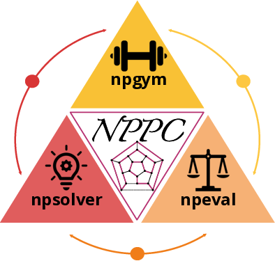

Nondeterministic Polynomial-time Problem Challenge: An Ever-Scaling Reasoning Benchmark for LLMs
Chang Yang*, Ruiyu Wang*, Junzhe Jiang, Qi Jiang, Qinggang Zhang, Yanchen Deng, Shuxin Li, Shuyue Hu, Bo Li, Florian T. Pokorny, Xiao Huang, and Xinrun Wang
Transactions on Machine Learning Research (TMLR)
Reasoning is the fundamental capability of large language models (LLMs). Due to the rapid progress of LLMs, there are two main issues of current benchmarks: i) these benchmarks can be crushed in a short time (less than 1 year), and ii) these benchmarks may be easily hacked. To handle these issues, we propose the ever-scalingness for building the benchmarks which are scaling over complexity, instance, oversight and coverage. This paper presents Nondeterministic Polynomial-time Problem Challenge (NPPC), an ever-scaling reasoning benchmark for LLMs. Specifically, the NPPC has three main modules: i) npgym, which provides a unified interface of 25 well-known NP-complete problems and can generate any number of instances with any levels of complexities, ii) npsolver, which provides a unified interface to evaluate the problem instances with both online and offline models via APIs and local deployments, respectively, and iii) npeval, which provides the comprehensive and ready-to-use tools to analyze the performances of LLMs over different problems, the number of tokens, the aha moments, the reasoning errors and the solution errors. Extensive experiments over widely-used LLMs demonstrate: i) NPPC can successfully decrease the performances of advanced LLMs to below 10%, demonstrating that NPPC is not crushed by current models, ii) DeepSeek-R1, Claude-3.7-Sonnet, and o1/o3-mini are the most powerful LLMs, where DeepSeek-R1 can outperform Claude-3.7-Sonnet and o1/o3-mini in most NP-complete problems considered, and iii) the numbers of tokens, aha moments in the advanced LLMs, e.g., Claude-3.7-Sonnet and DeepSeek-R1, are observed first to increase and then decrease when the problem instances become more and more difficult. Through continuously scaling analysis, NPPC can provide critical insights into LLMs' reasoning capabilities, exposing fundamental limitations and suggesting future directions for further improvements.